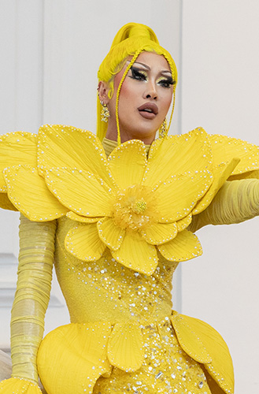
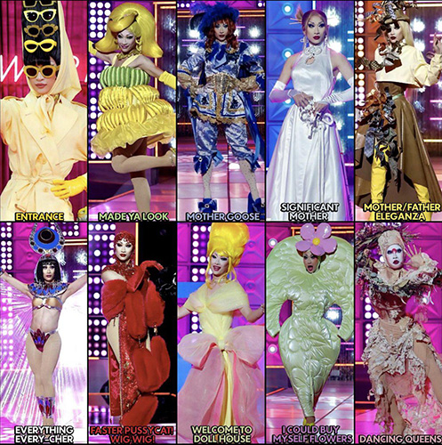
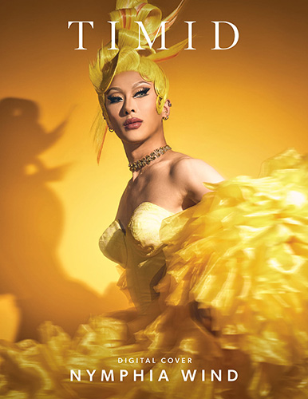
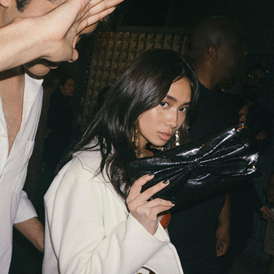
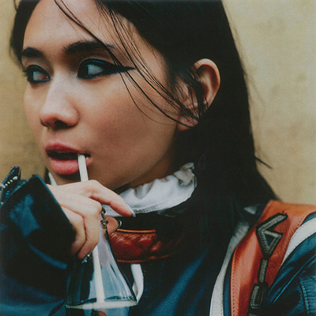
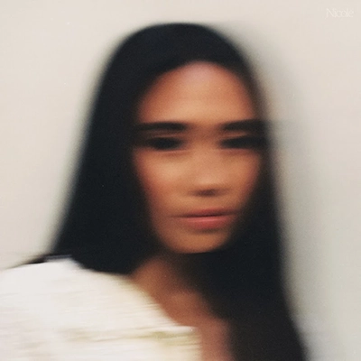
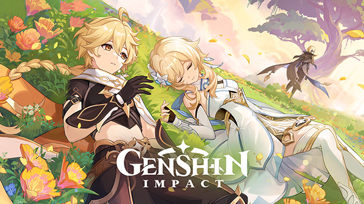
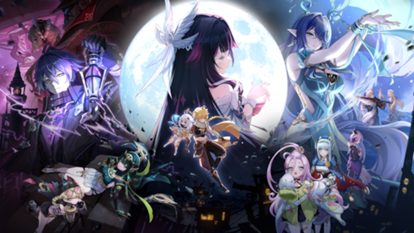
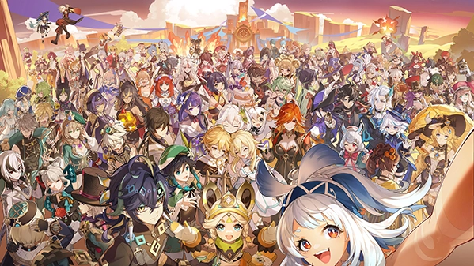

Nymphia Wind
Taiwanese Drag queen, Winner of Season 16 of Rupaul's Drag Race, Nymphia Wind.
Her influence of Asian culture in everything she makes and wears. As well as building her brand around bananas, Nymphia Wind is truly an inspiration of what skill in design can bring to you.



NIKI
Nicole Zefanya, or "NIKI", is an Indonesian singer and songwriter that I truly love as her ability to convey a story though her lyrics that really touch close to the heart not only inspires me,
but also brings me comfort when I'm feeling sad. Music inspires me a lot and NIKI is truly one of those inspirations who that passion in your work inspires.



Genshin Impact
Genshin Impact is a game created by the MiHoYo company and is also my personal favorite game. Genshin Impact is one of the reasons I even wanted to pursue a design major.
Everything from storytelling, to world building and design, character development and lore development, I truly love it all from this game. Any design principle that goes into making a video game such as Genshin Impact,
truly inspires my creativity and want to create.


